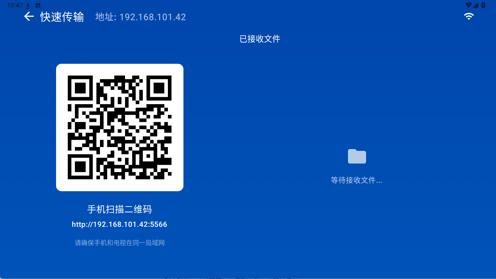
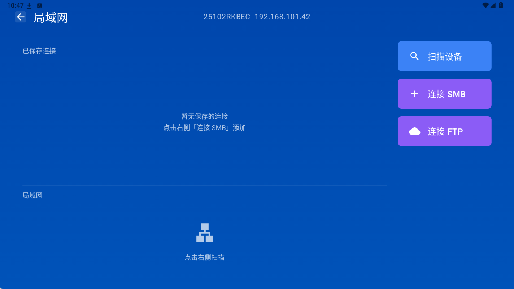
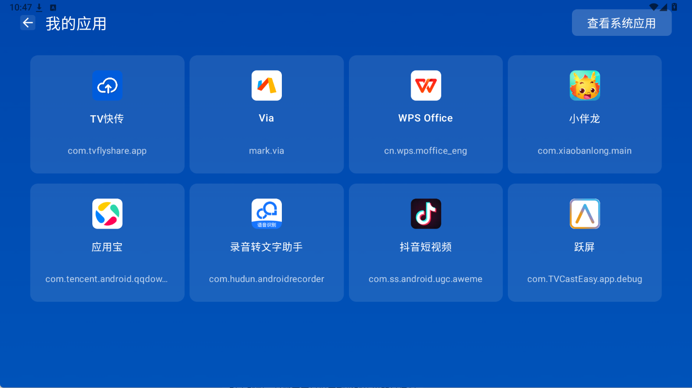
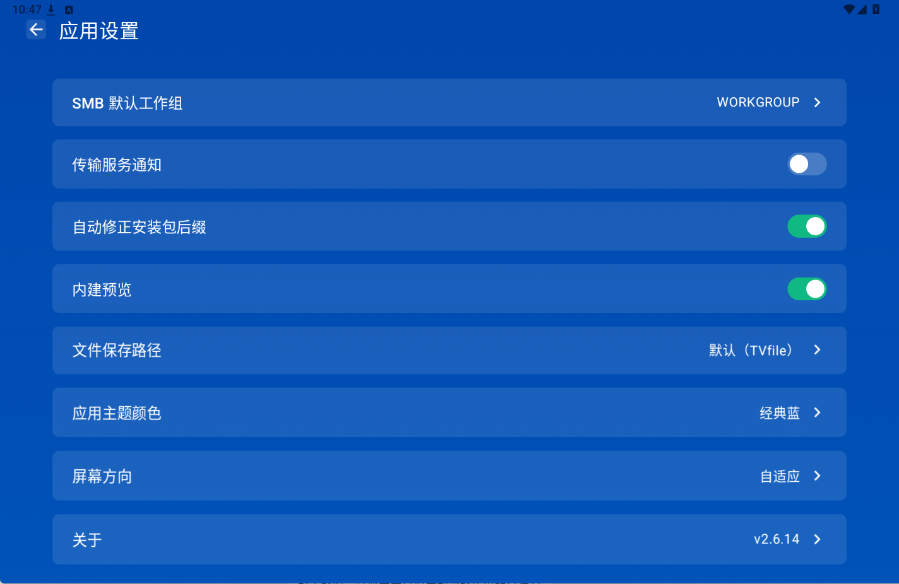
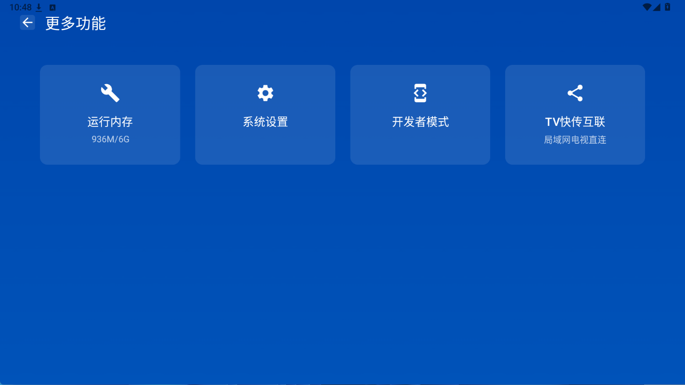
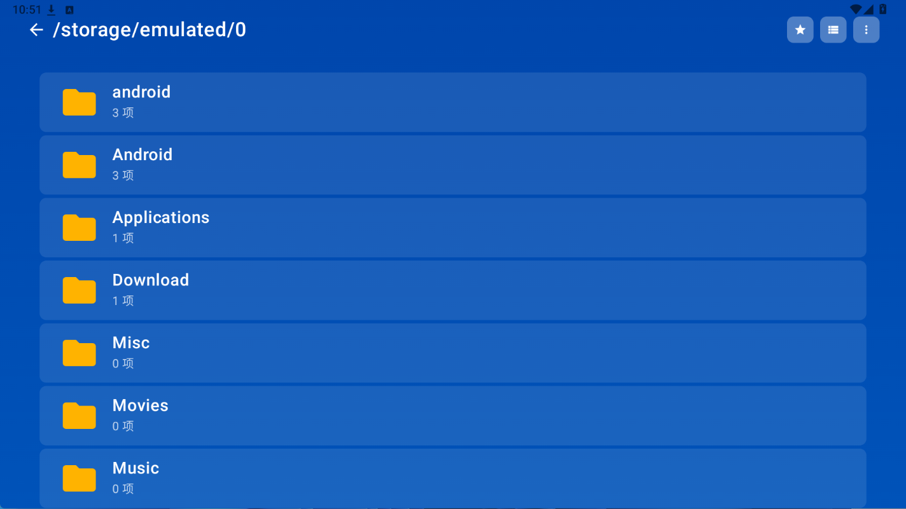
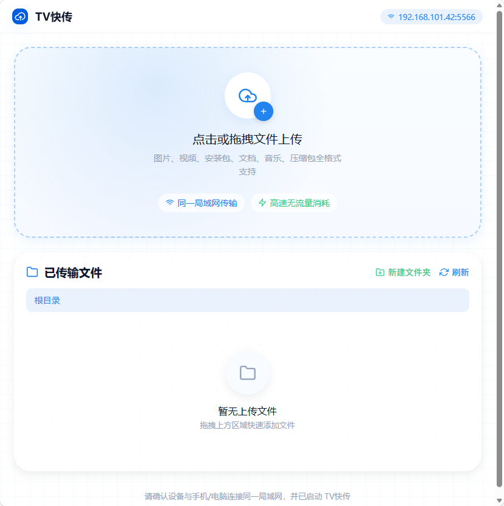

一台电视，把文件这点事全包了
从手机传文件到电视，到管理电视本机目录、浏览局域网共享，都在同一个应用里完成。
扫码即传
电视上打开「快速传输」，手机扫二维码进入网页端，选文件即可上传，不用装任何电脑端软件。
局域网共享
自动发现同网段设备，支持连接 SMB 与 FTP 共享目录，浏览、复制、移动、下载一气呵成。
本机文件管理
按图片、视频、音乐、文档分类浏览电视本机文件，支持新建文件夹、复制移动、删除与卸载应用。
保存位置可调
接收与下载的落盘目录可以在设置里改，改完立即生效，不用重启服务。
下载完整性校验
升级包按配置里的 SHA-256 指纹校验后才安装；被微信 / QQ 改名的 .apk1 也能自动还原。
为大屏而生
基于 Material 3 的宽度类 × 高度类自适应，电视横屏、平板、手机竖屏都能得到合适布局。
应用长什么样
以下为 v2.6.14 的电视端实机界面与配套的网页端，点击任意图片可放大查看。







三步开始用
项目完全开源，可以自行编译，也可以使用发布页面提供的安装包。
在电视上安装
从仓库的 Releases 页面获取安装包，或按 README 用 gradlew.bat :app:assembleDebug 自行编译。
连上同一个 WiFi
电视与手机、电脑接同一局域网。应用仅在本地网络工作，不依赖任何云端账号。
扫码，开始传
打开「快速传输」，用手机扫屏幕上的二维码，即可在浏览器里上传、下载和管理文件。
使用前请留意：服务不鉴权
为了让手机、电脑免登录直接传文件，内建服务是明文 HTTP 且不校验身份。连入同一 WiFi 的任何人都能浏览、下载共享目录里的文件，也能上传和删除。请只在可信的家庭或办公内网使用，不要在公共 WiFi 下开启，也不要做端口转发或内网穿透。
用什么做的
源码与下载
代码按 MIT 许可证开放，可自由使用、修改与再分发。国内外各有一份镜像。